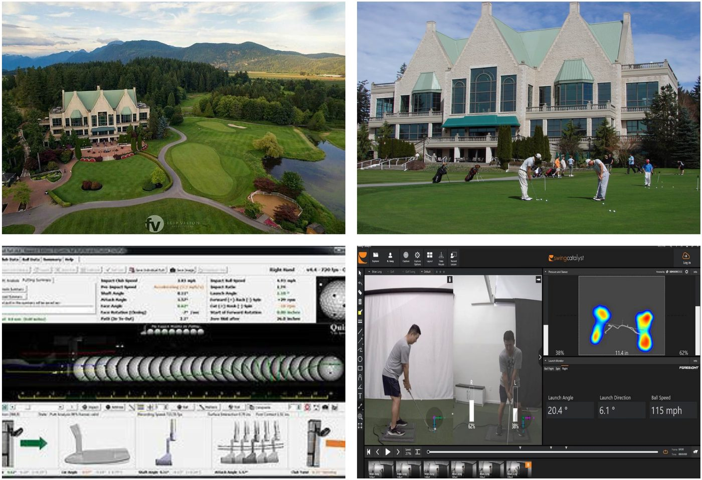
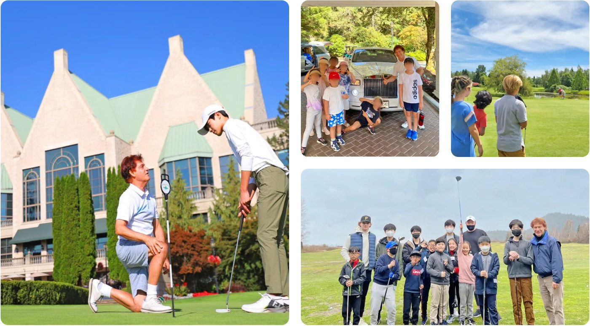
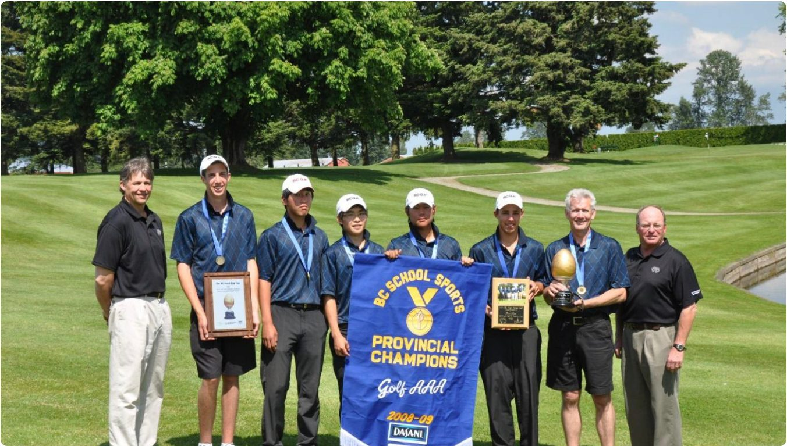

VIGA는 2003년 캐나다 PGA Class A 멤버 Tommy Lee 프로가 설립한 주니어·대학 진학 전문 골프 아카데미로, 2007년부터 BC주 제42 교육청 공식 골프 교육 기관으로 지정되어 운영되고 있습니다.
PROGRAM SNAPSHOT
한눈에 보는 프로그램 개요
🎒
대상 학년
Grade 6~11
⛳
훈련 베이스
Swan-e-set Bay Resort (36홀)
🎓
진학 경로
NCAA 장학 / PGA 골프경영학
🏠
숙소
검증된 현지 홈스테이
VIDEO
영상으로 먼저 확인하세요VIGA 골프 아카데미 소개 + 에듀스마트 공식 소개 영상
▲ VIGA 골프 아카데미 — 훈련 환경과 시설 소개
▲ 에듀스마트 공식 소개 영상
TWO PATHWAYS
두 가지 과정 중 선택합니다
구분
NextGen Golf & English
PGM University Pathway
대상
초·중학생
중·고등학생
목표
골프 + 영어 + 정규학업 병행
PGA 골프경영학 대학 진학 + 자격증 취득
주요 특징
안정적 환경 속 글로벌 유학형 프로그램
자격증 + 인턴십 + 취업비자 연계
골프 수업
주 4회 (레슨 + 라운딩)
주 5회 (레슨 + 라운딩)
연간 비용
CA$101,700약 1억 1,034만 원
CA$108,400약 1억 1,761만 원
💡 환율 안내 — 원화 환산은 2026년 6월 기준 CAD/KRW 약 1,085원을 적용한 참고 수치이며, 실제 환전 시점 환율에 따라 달라집니다.
FACILITY
36홀 챔피언십 코스 + 최첨단 분석 시스템

▲ Swan-e-set Bay Resort & Country Club 전경 · 퍼팅 그린 · Quintic 퍼팅 분석 · Swing Catalyst 지면반력 분석
VIGA는 Swan-e-set Bay Golf & Country Club을 비롯해 Golf Mecca Center, Performance Golf Center 등을 기반으로 운영됩니다. 소속 학생들은 정식 멤버로 등록되어 총 2개의 18홀 코스와 모든 연습 시설을 자유롭게 이용할 수 있습니다.
📡
Trackman
샷 궤적·스핀량·비거리 실시간 분석
⛳
Quintic Putting
초고속 카메라로 퍼팅 스트로크 교정
⚖️
Swing Catalyst
지면 반력·체중 이동 시각화
🛠
Club-Fitting
신체 조건·스윙 스피드 맞춤 피팅
🏌️
2개 18홀 코스
정식 멤버 등록으로 자유 이용
🏅
교육청 공식 기관
2007년부터 BC주 제42 교육청 지정
COACHING STAFF
PGA 투어 출신부터 국가대표 코치까지
FOUNDER · 설립자
Tommy Lee
캐나다 PGA Class A 프로
코퀴틀람 교육청 골프 프로그램 디렉터
Swan-e-set 골프장 헤드 티칭 프로
전 캐나다 국가대표 선수 코치
캐나다 PGA 골프 경영학 전공
HEAD COACH · 헤드 코치
Brian Jung
캐나다 PGA Class A 프로
현 LPGA 및 European 투어 선수 코치
TPI 레벨 3 이수 (골프 피트니스 전문가)
전 Simon Fraser 대학(SFU) 골프팀 코치
전 BC주 골프팀 코치
SHORT GAME COACH
Tom Whittle
캐나다 PGA Class A 프로
전 PGA 투어 선수 (1974~1980)
BC주 PGA 챔피언십 3회 우승
밴쿠버 Srixon 투어 5회 우승
PLAYING COACH
Jake Kwon
캐나다 PGA Class A 프로
현 캐나다 국가대표 선수 코치
KPGA 멤버
VGT 투어 Swan-e-set 시리즈 우승
TRAINING COACH
Peter Knill
캐나다 PGA Class A 프로 / PGA Life Member
전 캐나다 PGA 투어 선수 (1981~1987)
Ontario주 PGA 챔피언십 2회 우승
전 Vancouver 골프 클럽 헤드 프로
TRAINING COACH
Willis Lee
캐나다 PGA Class A 프로
현 캐나다 국가대표 선수 코치
KPGA 멤버
VGT 투어 Swan-e-set 시리즈 우승
NEXTGEN CURRICULUM
NextGen 5-Step 케어 시스템학업부터 생활 관리까지
01
ACADEMIC PATHWAY
정규 학교 학업 과정
공립 교육청 공인 학위 — 캐나다 정규 고등학교 졸업 자격 취득
학사 일정과 훈련 스케줄 조율 · 학교 골프팀 소속 활동
02
GOLF TRAINING
PGA 전문 코칭 프로그램
집중 레슨(주 3회) — 스윙 교정·퍼팅·숏게임·멘탈 관리 파트별 심화
골프 최적화 피지컬 트레이닝 · 주 1회 실전 필드 라운딩
03
ENGLISH IMMERSION
현지 몰입형 영어 교육
집중 영어 수업(주 2회) — ESL 및 정규 교과 보충
골프 전문 영어(용어·에티켓·규정) · 에세이·토론·프레젠테이션 · 인터뷰 트레이닝
04
ACCOMMODATION & LIFE
안심 생활 관리 시스템
엄격한 기준을 통과한 검증된 현지 홈스테이 배정
24시간 밀착 케어 · 주말 문화 체험(옵션, 별도 비용) · 두 달마다 리포트 발송
05
UNIVERSITY & CAREER
맞춤형 진로 컨설팅
NCAA 미국 대학 골프 장학생 진학 지도 · PGA 골프 경영학 진학 컨설팅
캐나다 PGA 자격증 로드맵 · 주니어 토너먼트 참가 및 경력 관리(선택)
DAILY SCHEDULE
하루 일과 — NextGen 과정
07:00 ~08:00
아침식사 및 등교 준비
홈스테이 가정에서 아침 시작
08:30 ~14:30
캐나다 정규학교 수업
공립 교육청 정규 커리큘럼 이수
14:30 ~15:30
이동 및 간식
월·화·금 골프장 이동 수·목은 학원 이동
15:30 ~17:30
골프 수업 & 3홀 라운딩 / 영어 수업
월·화·금 골프 (레슨 + 3홀 라운딩) · 수·목 영어 수업
17:30 ~21:00
홈스테이 귀가 · 저녁 식사 · 휴식
현지 가정에서 저녁 시간
토요일
골프 연습 + 9홀/18홀 라운딩
오전 10:00~12:00 연습 · 오후 13:00~17:00 골프 수업 및 라운딩
📌 PGM University Pathway 과정은 일정이 다릅니다
월·화·목·금 15:30~17:30 골프 수업 및 6홀 라운딩 → 17:30~21:00 홈스테이 귀가·저녁 식사·휴식 → 20:30~22:30 학교 숙제 및 공부.
수요일은 골프 수업이 없으며, 원할 경우 영어 수업 참여 가능(추가 요금 발생). 일요일은 한 달에 한 번 액티비티가 진행되고, 없는 날은 홈스테이 가족과 함께합니다.
* 프로그램 일정은 날씨·휴일·골프 시합에 따라 변경될 수 있으며, 골프 초보자의 라운딩 훈련은 시작 두 달 후부터 진행됩니다.
GALLERY
훈련 현장과 성과

PGA 프로 1:1 퍼팅 레슨 · 주니어 단체 라운딩 · 아카데미 학생 활동

BC School Sports 주 대회 Golf AAA 챔피언 팀 (2008-09) — 학교 골프팀 활동 성과
🏆 이 프로그램의 학생들은 학교 골프팀 소속으로 교내외 활동에 참여하며, BC주 학교 대항 대회 출전 기회도 갖게 됩니다. 사진은 VIGA 지도진이 함께한 BC School Sports 주 챔피언십 우승 사례입니다.
COST
프로그램 비용 (ALL INCLUSIVE)
NEXTGEN GOLF & ENGLISH
골프 + 영어 + 정규학업
CA$101,700
약 1억 1,034만 원
PGM UNIVERSITY PATHWAY
골프경영학 대학 진학 과정
CA$108,400
약 1억 1,761만 원
NextGen 포함 내용
공립 학교 학비
캐네디언 홈스테이비
공항 픽업 · 랜딩 · 보험료
풀가디언 비용
방과후 토탈 관리(주 2회) · 생활 관리
주말 액티비티 (한 달 2회)
골프 수업 및 라운딩 (주 4회)
PGM Pathway 포함 내용
공립 학교 학비
캐네디언 홈스테이비
풀가디언 비용
공항 픽업 · 랜딩 · 보험료
생활 관리
골프 수업 및 라운딩 (주 5회)
ADMISSION
지원 자격 (PGM University Pathway)
🔰 골프 무경험자 (Beginner)
대상 연령: 만 14세 ~ 16세
최근 2년 이상 학교 성적표
교장 및 담임 선생님 추천서
🏌️ 골프 경험자
대상 연령: 만 16세 이상
지원 자격: 공식 핸디캡 18 미만
골프 스윙 동영상 제출
최근 2년 학교 성적표 + 추천서
UNIVERSITY NETWORK
PGA 골프 경영학 대학 네트워크
🇺🇸 미국 (USA)
Arizona State University
Clemson University
Florida State University
Penn State University
North Carolina State University
University of Colorado
UNLV (Univ. of Nevada, Las Vegas)
Mississippi State University
Coastal Carolina University 외 다수
🇨🇦 캐나다 (Canada)
Humber College
Niagara College
Georgian College
Camosun College
MacEwan University
Lethbridge College
Holland College
St. Clair College
CAREER
골프 경영학 졸업 후 진로
01
Management
경영 및 운영
골프 클럽 총괄 매니저 · 아카데미 운영 · 협회 운영 · 시합 운영
02
Coaching
교육 및 지도
PGA Class A 티칭 프로 · 골프장 헤드 프로 · 학교 골프팀 코치
03
Industry & Media
산업 및 미디어
골프 용품 제조·전문가 · 골프 방송/언론 · 코스 개발·설계·관리
에듀스마트 안내에 따르면, PGA 골프 경영학과는 1975년부터 약 5,000여 명의 졸업생이 높은 취업률을 기록해 왔으며, 국제 유학생의 경우 취업 비자 취득이 가능한 인턴십 과정이 프로그램에 포함되어 있어 졸업 후 북미 현지 취업·이민 진행에 유리하다고 소개하고 있습니다.
FAQ
학부모님이 자주 묻는 질문
Q1골프를 한 번도 안 해봤는데 시작할 수 있나요?
가능합니다. PGM University Pathway는 만 14~16세 골프 무경험자 트랙을 따로 운영하며, 이 경우 성적표와 추천서만 제출하면 됩니다(스윙 영상 불필요). 다만 초보자는 라운딩 훈련이 프로그램 시작 두 달 후부터 시작되고, 그 기간에는 기본기 위주로 진행됩니다. 반면 만 16세 이상 경험자 트랙은 공식 핸디캡 18 미만과 스윙 영상 제출이 필수입니다.
Q2골프 때문에 공부를 놓치지 않을까요?
이 프로그램은 캐나다 공립 정규 고등학교 졸업 자격 취득을 전제로 설계되어 있습니다. 오전 8시 30분부터 오후 2시 30분까지는 정규 학교 수업이고, 골프는 방과 후 시간에 배치됩니다. NextGen 과정은 주 2회 영어 수업이 별도로 있고, PGM Pathway는 저녁 8시 30분~10시 30분에 학교 숙제·공부 시간이 일과표에 고정되어 있습니다. 학사 일정과 훈련 스케줄은 아카데미가 조율합니다.
Q3골프 클럽과 장비는 어떻게 하나요?
개인 장비는 별도 준비입니다. 프로그램 비용에는 레슨·라운딩·시설 이용이 포함되고 장비 구입은 포함되지 않습니다. VIGA는 전문 클럽 피팅 시스템을 운영하므로, 성장기 학생이라면 한국에서 무리해서 맞추기보다 현지에서 신체 조건에 맞춰 피팅받는 편이 낫습니다. 초보자는 중고 세트로 시작해 실력이 붙은 뒤 교체하는 것도 일반적입니다.
Q4밴쿠버는 비가 많다는데 겨울에도 훈련이 되나요?
됩니다. 밴쿠버는 겨울에 눈보다 비가 오는 지역이라 연중 골프장이 운영되고, 현지 골퍼들은 우비를 입고 라운딩합니다. 비가 심한 날에는 Trackman 시뮬레이터가 있는 실내 시설에서 스윙 분석과 퍼팅 훈련을 진행합니다. 다만 프로그램 안내에도 명시되어 있듯 일정은 날씨·휴일·시합에 따라 조정될 수 있습니다.
Q5NCAA 장학생으로 진학할 수 있나요?
프로그램이 NCAA 진학 지도를 제공하지만, 장학금은 프로그램이 아니라 학생의 경기 성적이 결정합니다. 미국 대학 코치들은 주니어 토너먼트 성적과 스코어 기록을 보고 리크루팅하며, NCAA는 별도의 학업 자격 요건(Eligibility Center 등록, 필수 과목 이수, GPA)도 충족해야 합니다. 즉 대회 출전 실적이 필수이므로, NCAA가 목표라면 토너먼트 참가 계획을 처음부터 함께 세워야 합니다.
Q6대회 참가 비용은 따로 드나요?
네, 토너먼트 참가는 선택 사항으로 명시되어 있어 참가비와 이동·숙박비가 별도로 발생합니다. NCAA를 목표로 한다면 시즌당 여러 대회에 나가야 하므로 이 비용이 누적됩니다. 반면 학교 골프팀 활동은 교내 활동에 포함되어 있어 추가 부담이 적습니다. 목표가 NCAA인지, 골프를 병행하며 대학에 가는 것인지에 따라 예산이 크게 달라지니 상담 시 명확히 하세요.
Q7다른 관리형보다 비용이 훨씬 비싼 이유가 뭔가요?
일반 관리형이 연 6~8만 캐나다달러인 데 비해 이 프로그램은 10만 달러대입니다. 차액의 실체는 Swan-e-set 골프장 정식 멤버십, PGA Class A 프로의 주 4~5회 코칭, Trackman·Quintic·Swing Catalyst 등 분석 장비 이용, 풀가디언 서비스입니다. 한국에서 같은 수준의 프로 레슨을 주 4회 받는 비용과 비교해 보시면 판단이 쉽습니다.
Q8어느 학교에 다니게 되나요?
코퀴틀람 교육청(SD43) 소속 공립학교에 배정됩니다. VIGA 설립자 Tommy Lee 프로가 코퀴틀람 교육청 골프 프로그램 디렉터를 맡고 있어 학교와 아카데미 일정 연계가 원활합니다. 다만 브로슈어에 개별 학교명이 명시되어 있지 않아, 배정 가능 학교와 골프팀 운영 여부는 상담 시 확인이 필요합니다.
Q9중간에 골프를 그만두면 어떻게 되나요?
에듀스마트가 같은 코퀴틀람 권역에서 기숙사·홈스테이 관리형을 운영하므로 학교를 유지한 채 일반 관리형으로 전환하는 것이 가능합니다. 다만 이미 납부한 골프 관련 비용(멤버십·레슨료)의 환불 범위는 계약 조건에 따르며, 학기 중 전환은 정산이 복잡해질 수 있습니다. 등록 전 계약서의 중도 해지·전환 조항을 반드시 확인하세요.
Q10PGM 과정을 마치면 캐나다에 취업할 수 있나요?
PGM 골프경영학 과정에는 취업 비자 취득이 가능한 인턴십이 포함되어 있고, 졸업 후에는 캐나다 대학 졸업생에게 주어지는 졸업 후 취업허가(PGWP) 경로도 열립니다. 다만 이민 정책은 자주 바뀝니다. 지금의 규정이 아이가 졸업하는 5~8년 뒤에도 같으리라는 보장은 없으므로, 취업·이민을 프로그램 선택의 유일한 이유로 삼는 것은 권하지 않습니다.